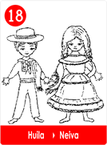
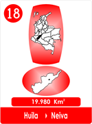

Cuentan los Cronistas antiguos.En la Serranía vivía una orgullosa madre, a quien llamaban "La Cacica Gaitana", por su hijo que era un buen Cacique, que amaba a su pueblo.

Cierto día se apareció un conquistador llamado Pedro de Añasco, que pretendió dar ordenes y someter al Cacique para despojarle de todas sus pertenencias.

Como el joven Cacique no quiso atenderle, decidió aplicarle un cruel castigo, así, además atemorizar a los otros Caciques, con una demostración publica, para que no se atrevieran a desobedecerle de nuevo, el era ahora el dueño!
Lo capturó, lo amarró, y en la presencia de su madre y del
pueblo, lo exhortó y con crueldad lo quemó vivo.


Como es natural la Cacica Gaitana lloró desconsoladamente y entonces decidió darle al conquistador español una muestra de su enojo y del de su pueblo.
Se puso al frente de más de 12.000 guerreros de todas las tribus de la región, para desterrar y castigar a quienes les querían gobernar y despojar de todo.